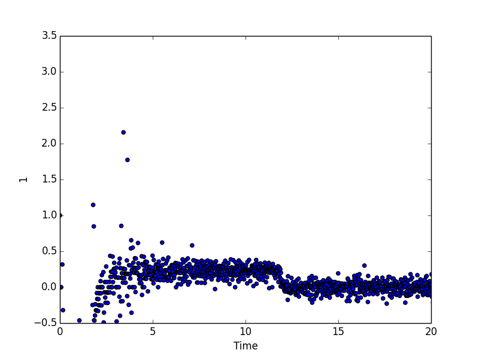

- Growth Rate Analysis
- Imagine Analysis Pipeline
- Lidocaine
- Microbial Fuel Cells
Growth Rate Analysis
The Turbidostat is an inexpensive, 3D printable, open source device developed by the Klavins Lab at the University of Washington. Their website and project can be found at klavinslab.org/hardware. The device allows cells to grow at exponential rates while keeping the cell density relatively constant. This is done through the use of lasers that measure optical density and give feedback to the media delivery system which continuously removes waste and dilutes the solution with fresh media. This set up removes two important stresses from the growth environment: limited nutrients and cell density. In this way, the cells should not evolve to these types of common stresses.
My current work involves additions to this open source Turbidostat project. I am specifically writing Python, R, and Bash programs to take optical density measurements from the lasers and calculate the growth rate of cells growing in tubes. Being able to accurately identify changes in growth rate is an important feature to add to this set up because it can be an indicator of evolution in the cell culture. This evolution may be something the experimenters may want to avoid or something they are hoping occurs after they introduce a novel stress. Either way, this feature will give them critical insight in this matter.
This is a recent example of growth rate measurments for yeast cells calculated based on optical density measurements from lasers in the incubation chamber.
The end goal of this contribution is to have an entire, independent pipeline with the ability to dynamically and automatically measure growth rates, compute general statistics, compare experimental results with expected results, generate graphs, and notify experimenters with revelant information. There is plenty of more work to get done on this project. The current state of things can be found on our GitHub page github.com/Siegallab/Flexostat-interface. The original code and other files related to this project can be found on their GitHub profile github.com/Flexostat